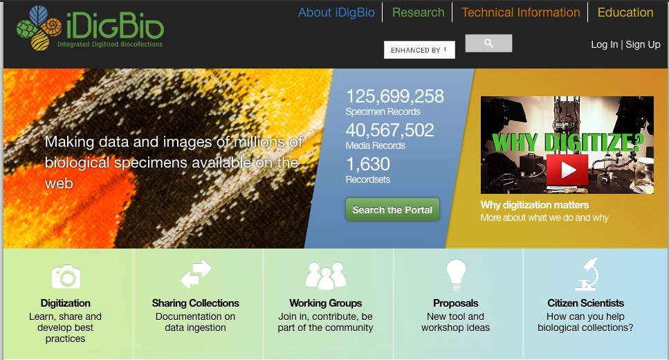
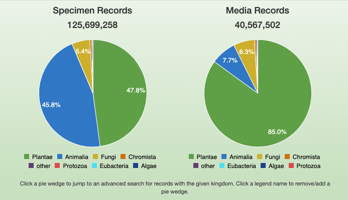
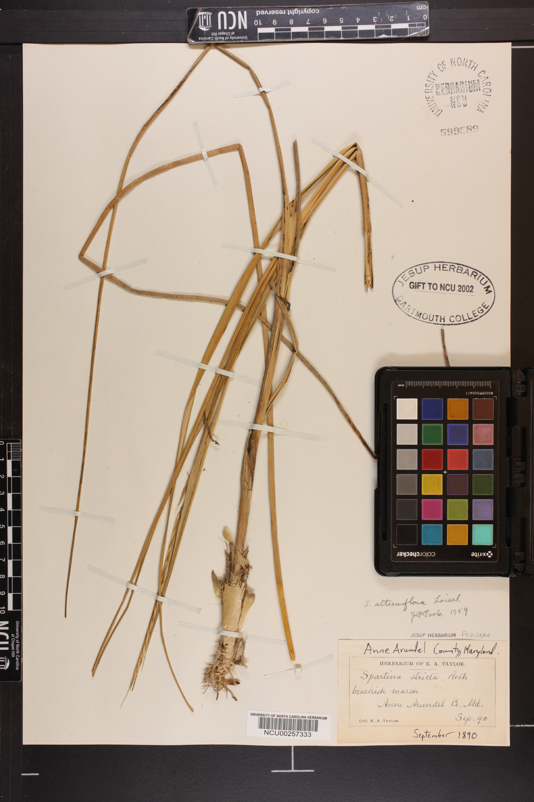
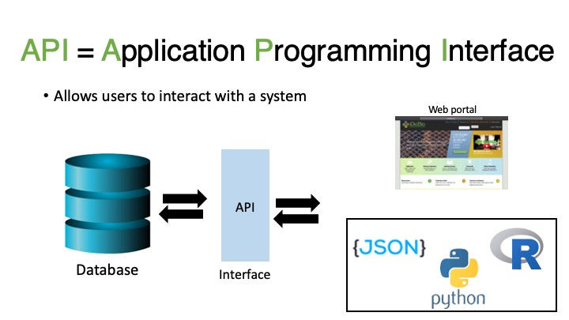
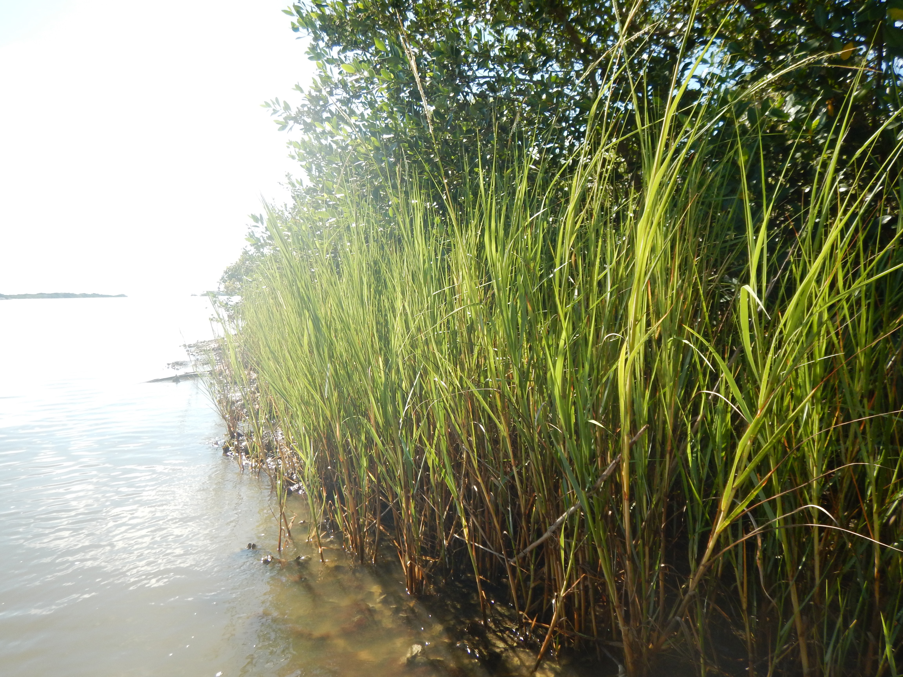
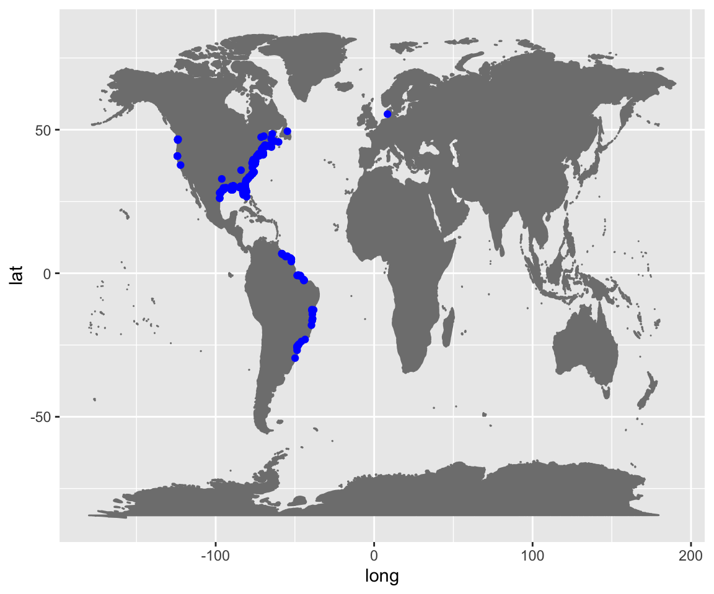
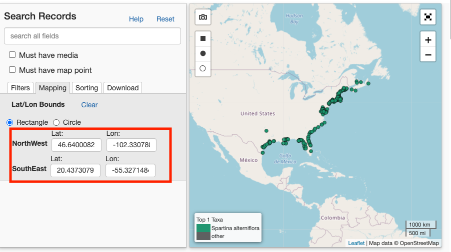
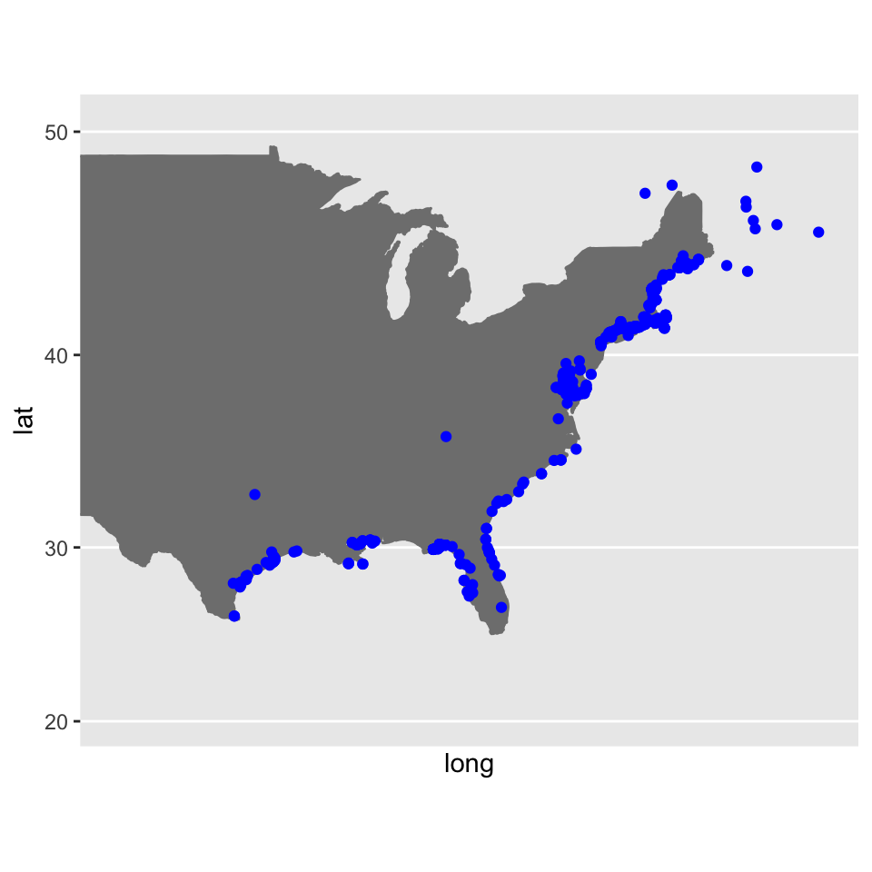

Chapter 4 Class Activity
4.1 Learning Objective
- Demonstrate how to download biodiversity data through an Application Programming Interface.
- Plot occurrence data on a simple map.
4.2 Background information
4.2.1 iDigBio
iDigBio, or the Integrated Digitized Biocollections, is a biodiversity aggregator. It currently holds over 125 million specimen records and over 40 million media records.  These specimen include mostly plants and animals. While media records include mostly plant specimen.  Here is an example of a plant media record: 
4.2.1.1 Application Programming Interface
An API, or Application Programming Interface, allows a user to interact with a system that contains data. In this case, we are interacting with iDigBio, a biodiversity data aggregator. Even when we use the web portal for iDigBio, we are still interacting with the API. Here we will learn how to interact with the iDigBio API using R.

4.2.1.2 Spartina alterniflora
Spartina alterniflora, smooth cordgrass, grows along shorelines throughout both the Atlantic and Gulf coasts of North America. In its native range, it is used in ecosystem restoration due to its extensive rooting capabilities.

4.3 Downloading Data
Set up your R project and R script
- Open a new R project and name it “DataDownloading”
- Within your R project, create an R script titled “DataDownloading.R”
DataDownloading.R
Install Packages
Do not include this in your R script! It is better to write this in the console than in our script for any package, as there’s no need to re-install packages every time we run the scrip
The rest should be included in the script.
Data download from iDigBio
Here we use the idig_search_records function and the rq, or record query, indicates we want to download all the records where the scientificname is equal to Spartina alterniflora, or smooth cord grass.
Inspect the downloaded records
How many observations are in this record set?
To determine this, we can use the nrow function to see the number of rows this data frame includes.
## [1] 1656How many columns does this data frame include?
To determine this, we can use the ncol function to see the number of columns this data frame includes.
## [1] 13What columns does this data frame include?
To print the columns names, we can use the colname function.
## [1] "uuid" "occurrenceid" "catalognumber" "family"
## [5] "genus" "scientificname" "country" "stateprovince"
## [9] "geopoint.lon" "geopoint.lat" "datecollected" "collector"
## [13] "recordset"Based on Darwin Core Standards, we know what each of these columns means.
| Column | Description |
|---|---|
| uuid | Universally Unique IDentifier, https://tools.ietf.org/html/rfc4122 |
| occurrenceid | identifier for the occurrence, http://rs.tdwg.org/dwc/terms/occurrenceID |
| catalognumber | identifier for the record within the collection, http://rs.tdwg.org/dwc/terms/catalogNumber |
| family | scientific name of the family, http://rs.tdwg.org/dwc/terms/family |
| genus | scientific name of the genus, http://rs.tdwg.org/dwc/terms/genus |
| scientificname | scientific name, http://rs.tdwg.org/dwc/terms/scientificName |
| country | country, http://rs.tdwg.org/dwc/terms/country |
| stateprovince | name of the next smaller administrative region than country, http://rs.tdwg.org/dwc/terms/stateProvince |
| geopoint.lon | equivalent to decimalLongitude, http://rs.tdwg.org/dwc/terms/decimalLongitude |
| geopoint.lat | equivalent to decimalLatitude,http://rs.tdwg.org/dwc/terms/decimalLatitude |
| datecollected | equivalent to eventDate, https://dwc.tdwg.org/terms/#dwc:eventDate) |
| collector | equivalent to recordedBy, http://rs.tdwg.org/dwc/terms/recordedBy |
| recordset | indicates the iDigBio recordset the observation belongs too |
Plot the records
Now that we have inspected the data frame, let’s plot the records. We will use ggplot2 to create a simple plot.
First, we need to download a basemap to plot our points on. Here I download a world map that is outlined and filled with the shade “gray50” using the function borders which is from the package ggplot2.
Next, we are going to create a plot using the base map. We will add the points from the iDigBio_SA data frame using the geom_point function. For ggplot2, you have to indicate mapping aesthetics or mapping = aes(). Within this statement we include x = geopoint.lon, y = geopoint.lat) to indicate that the x coordinate should be the column containig longitude (geopoint.lon), and the y coordinate should be the column containing latitude (geopoint.lat). Finally, we indicate we want these points to be blue, or
all_plot <- ggplot() +
world +
geom_point(iDigBio_SA,
mapping = aes(x = geopoint.lon, y = geopoint.lat),
col = "Blue")
all_plot
When you plot the occurrence records downloaded, you will notice points outside of the native range! Spartina alterniflora is very invasive in California and other parts of the world.
Save as a jpg: To save your map as an image file, you can easily run the following lines.
4.4 Limiting the extent
What if you want to only download points for the species within the native extent? Then we would need to define a bounding box to restrict our query (as coded by
Hint: Use the iDigBio portal to determine the coordinates for the corners of the bounding box of your region of interest.

Set the search criteria
Here we will redefine the rq, or record query, to include a geo_bounding_box based on the iDigBio webportal - I limited the extent only to the native range.
Plot the records
Similar to before, we will use ggplot2 to plot our points. These records only include points within the desired extent!
Since the native range is only in the USA, I downloaded a USA map that is outlined and filled with the shade “gray50” using the function borders which is from the package ggplot2.
USA <- borders(database = "usa", colour = "gray50", fill = "gray50")
limited_plot <- ggplot() +
USA +
geom_point(iDigBio_SA,
mapping = aes(x = geopoint.lon, y = geopoint.lat),
col = "Blue") +
coord_map(xlim = c(-60,-105), ylim = c(20, 50))
limited_plot
Congrats! You have made it through all the activities, you should now be able to answer all the questions in the assessment!